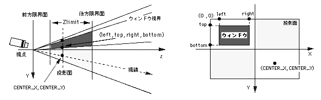

Return to previous page | Return to menu | Go to next page
void
Graphic function
Window settings
void slWindow(left , top , right , bottom , Zlimit , centx , centy)
Sint16 left ;
Sint16 top ;
Sint16 right ;
Sint16 bottom ;
Sint16 Zlimit ;
Sint16 centx ;
Sint16 centy ;
left X coordinate at upper left of window (screen coordinate system) top Y coordinate at the top left of the window (screen coordinate system) right X coordinate at bottom right of window (screen coordinate system) bottom Y coordinate at bottom right of window (screen coordinate system) Zlimit Window rear limit surface distance specification centx vanishing point X coordinate centy vanishing point Y coordinate
Set the window to limit the display of sprites and polygons.
A window is the name of a rectangular area set on the screen. Up to two windows can be set on one screen.
Polygons and sprites can be displayed or hidden inside and outside the window area.
As parameters, substitute the XY screen coordinate value that represents the window range, the Z coordinate value that represents the display rear limit, and the XY screen coordinate value that sets the vanishing point.
None
Polygons and sprites are affected by the windows set before drawing.
In SGL, the default window is set to the same size as the screen size, and the drawing of polygons and sprites when the function “slWindow” is never executed is affected by this default window.

Note) Left, top, right, bottom, CENTER_X, CENTER_Y indicate XY coordinate values for the monitor.
Reference: Chapter 4 Coordinate transformation
slWindow